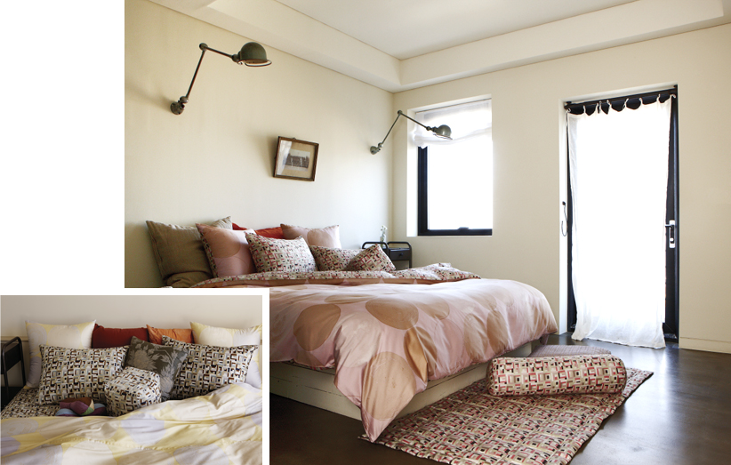

2012 Winter
bogg by Chang Eung Bok
¡°In the snowy night, the winter sensibility with full of scent of tea¡±
In the winter of 2012, premium bedding brand bogg launched ¡®Winter Palace,¡¯ goose down product patterning with Dawan.
Dawan is a tea cup used to drink tea, and designer Chang Eung-Bok wanted to express the life style of drinking tea and appreciating tea set through the motif of Dawan.
Chang, who prefers flat tea cups, arranged incomplete but beautiful circular shapes of Dawan when looked down from the above in a modern way, creating pattern. Also, she delicately expresses tea cup¡¯s motif, minute texture, and even tea mark that sank into glaze of the tea cup while enjoying tea for a long time. All these works were expressed in a monochrome way through digital work.
Unlike colorful patchwork work that bogg has presented, the work of Dawan motif contains story of tradition, originality, and traditional life style while the entire pattern gives the feeling of modern sensibility. Rather than using various and splendid five direction colors, tone-on-tone match of yellow and pink brings up silent and peaceful feeling like minute wave or breeze - just as the enjoyment felt when enjoying tea.
Designer Chang has prioritized texture as well as fabric design and pattern. She chose Hungarian premium goose product to use in the collection, gives richer and warmer feeling with more than 80% of cotton. The rich image of gooes down that put into bedding cover comes as a full shape of moon-shaped jar, harmonizing with the soft image of Dawan.
Supima cotton, chosen as bedding cover, is the premium material produced only 3% among U.S. cotton, and it gives glossy feeling like silk, excellent color formation, strong endurance against laundry as well as smooth feeling.
|